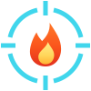

منصة رصد الحرائق من الأقمار الصناعية
يرتبط المفتاح بهذا الجهاز عند أول دخول، ولا يعمل بعدها على جهاز آخر. ادخل من الجهاز والمتصفح اللذين ستستخدمهما دائماً.
على الآيفون: أضف المنصة إلى الشاشة الرئيسية أولاً ثم اكتب المفتاح داخلها.
يحتاج هذا التطبيق إلى تفعيل JavaScript.